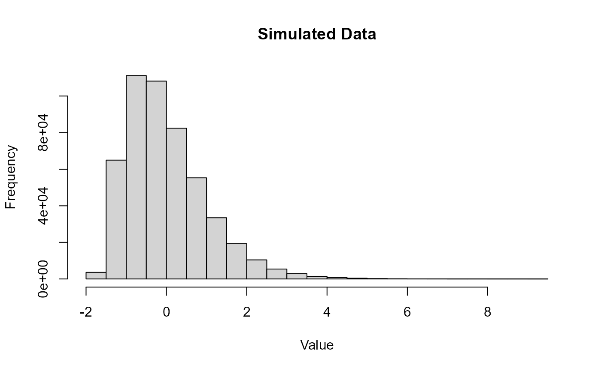

![[Experimental]](figures/lifecycle-experimental.svg)
Generates random data with the specified skewness and excess kurtosis using the
Fleishman transformation method.
Arguments
- n
An integer specifying the number of random data points to generate.
- skew
A numeric value specifying the desired skewness of the simulated data.
- kurt
A numeric value specifying the desired excess kurtosis of the simulated data.
- check
Boolean determining if the combination of skewness and kurtosis are valid.
- coefout
Boolean determining if the Fleishman coefficients should be outputted instead of the simulated values.
- coefin
Vector of the four coefficients to be used in Fleishman's equation. This bypasses the need to solve for the parameters.
Details
The function uses Fleishman's polynomial transformation of the form:
$$Y = a + bX + cX^2 + dX^3$$
where a, b, c, and d are coefficients determined
to approximate the specified skewness and excess kurtosis, and X is a
standard normal variable. The coefficients are solved using a numerical
optimization approach based on minimizing the residuals of Fleishman's
equations. An excess kurtosis is defined as the kurtosis of a Normal
distribution (k=3) minus 3.
The function is valid for a skewness range of -3 to 3 and an excess kurtosis
greater than -1.13168 + 1.58837 * skew ^ 2. If check = TRUE,
the function will warn the user if an invalid combination of skewness and
kurtosis are passed to the function. Deviation from the recommended combination
will result in a distribution that may not reflect the desired skewness and
kurtosis values.
If the proper combination of skewness and kurtosis parameters are passed to the
function, the output distribution will have a mean of around 0 and a
variance of around 1. But note that a strongly skewed distribution will
require a large n to reflect the desired properties due to the
disproportionate influence of the tail's extreme values on the various moments
of the distribution, particularly higher-order moments like skewness and kurtosis.
Fleishman, A. I. (1978). A method for simulating non-normal distributions. Psychometrika, 43, 521–532.
Wicklin, R. (2013). Simulating Data with SAS (Appendix D: Functions for Simulating Data by Using Fleishman’s Transformation). Cary, NC: SAS Institute Inc. Retrieved from https://tinyurl.com/4tustnph
Examples
# Generate a normal distribution
set.seed(321)
x <- eda_sim(1000, skew = 0, kurt = 0)
#> Skew/kurtosis combination is valid.
eda_theo(x) # Check for normality
# Simulate distribution with skewness = 1.15 and kurtosis = 2
# A larger sample size is more likely to reflect the desired parameters
set.seed(653)
x <- eda_sim(500000, skew = 1.15, kurt = 2)
#> Skew/kurtosis combination is valid.
# Verify skewness and excess kurtosis of the simulated data
# Mean and variance should be close to 0 and 1 respectively
eda_moments(x)
#> n mean var skew kurt
#> 5.000000e+05 -4.149649e-04 9.995423e-01 1.163226e+00 2.082610e+00
# Visualize the simulated data
hist(x, breaks = 30, main = "Simulated Data", xlab = "Value")
